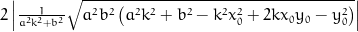
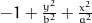
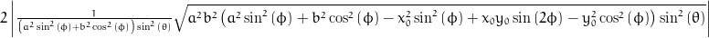

Assumed to be centred at 0, the coordinate system origin.
0=
Parametric solution (t). Solutions were derived automatically using sympy.
Points in cartesian coordinates (x, y, z)
x = x0 + (-pow(a, 2)*k*y0 - pow(b, 2)*x0 + sqrt(pow(a, 2)*pow(b, 2)*(pow(a, 2)*pow(k, 2) + pow(b, 2) - pow(k, 2)*pow(x0, 2) + 2*k*x0*y0 - pow(y0, 2))))/(pow(a, 2)*pow(k, 2) + pow(b, 2));
y = k*(-pow(a, 2)*k*y0 - pow(b, 2)*x0 + sqrt(pow(a, 2)*pow(b, 2)*(pow(a, 2)*pow(k, 2) + pow(b, 2) - pow(k, 2)*pow(x0, 2) + 2*k*x0*y0 - pow(y0, 2))))/(pow(a, 2)*pow(k, 2) + pow(b, 2)) + y0;
z = l*(-pow(a, 2)*k*y0 - pow(b, 2)*x0 + sqrt(pow(a, 2)*pow(b, 2)*(pow(a, 2)*pow(k, 2) + pow(b, 2) - pow(k, 2)*pow(x0, 2) + 2*k*x0*y0 - pow(y0, 2))))/(pow(a, 2)*pow(k, 2) + pow(b, 2)) + z0;
x = x0 - (pow(a, 2)*k*y0 + pow(b, 2)*x0 + sqrt(pow(a, 2)*pow(b, 2)*(pow(a, 2)*pow(k, 2) + pow(b, 2) - pow(k, 2)*pow(x0, 2) + 2*k*x0*y0 - pow(y0, 2))))/(pow(a, 2)*pow(k, 2) + pow(b, 2));
y = -k*(pow(a, 2)*k*y0 + pow(b, 2)*x0 + sqrt(pow(a, 2)*pow(b, 2)*(pow(a, 2)*pow(k, 2) + pow(b, 2) - pow(k, 2)*pow(x0, 2) + 2*k*x0*y0 - pow(y0, 2))))/(pow(a, 2)*pow(k, 2) + pow(b, 2)) + y0;
z = -l*(pow(a, 2)*k*y0 + pow(b, 2)*x0 + sqrt(pow(a, 2)*pow(b, 2)*(pow(a, 2)*pow(k, 2) + pow(b, 2) - pow(k, 2)*pow(x0, 2) + 2*k*x0*y0 - pow(y0, 2))))/(pow(a, 2)*pow(k, 2) + pow(b, 2)) + z0;
Distance between crossing points.
sol1 = (-pow(a, 2)*k*y0 - pow(b, 2)*x0 + sqrt(pow(a, 2)*pow(b, 2)*(pow(a, 2)*pow(k, 2) + pow(b, 2) - pow(k, 2)*pow(x0, 2) + 2*k*x0*y0 - pow(y0, 2))))/(pow(a, 2)*pow(k, 2) + pow(b, 2));
sol2 = -(pow(a, 2)*k*y0 + pow(b, 2)*x0 + sqrt(pow(a, 2)*pow(b, 2)*(pow(a, 2)*pow(k, 2) + pow(b, 2) - pow(k, 2)*pow(x0, 2) + 2*k*x0*y0 - pow(y0, 2))))/(pow(a, 2)*pow(k, 2) + pow(b, 2));
distance = 2*fabs(sqrt(pow(a, 2)*pow(b, 2)*(pow(a, 2)*pow(k, 2) + pow(b, 2) - pow(k, 2)*pow(x0, 2) + 2*k*x0*y0 - pow(y0, 2)))/(pow(a, 2)*pow(k, 2) + pow(b, 2)));


Assumed to be centred at 0, the coordinate system origin.
0=Parametric solution (t). Solutions were derived automatically using sympy.
![\frac{1}{\left(a^{2} \sin^{2}{\left (\phi \right )} + b^{2} \cos^{2}{\left (\phi \right )}\right) \sin^{2}{\left (\theta \right )}} \left(\sqrt{a^{2} b^{2} \left(a^{2} \sin^{2}{\left (\phi \right )} + b^{2} \cos^{2}{\left (\phi \right )} - x_{0}^{2} \sin^{2}{\left (\phi \right )} + x_{0} y_{0} \sin{\left (2 \phi \right )} - y_{0}^{2} \cos^{2}{\left (\phi \right )}\right) \sin^{2}{\left (\theta \right )}} - \left(a^{2} y_{0} \sin{\left (\phi \right )} + b^{2} x_{0} \cos{\left (\phi \right )}\right) \sin{\left (\theta \right )}\right)](eq256.png)
![- \frac{1}{\left(a^{2} \sin^{2}{\left (\phi \right )} + b^{2} \cos^{2}{\left (\phi \right )}\right) \sin^{2}{\left (\theta \right )}} \left(\sqrt{a^{2} b^{2} \left(a^{2} \sin^{2}{\left (\phi \right )} + b^{2} \cos^{2}{\left (\phi \right )} - x_{0}^{2} \sin^{2}{\left (\phi \right )} + x_{0} y_{0} \sin{\left (2 \phi \right )} - y_{0}^{2} \cos^{2}{\left (\phi \right )}\right) \sin^{2}{\left (\theta \right )}} + \left(a^{2} y_{0} \sin{\left (\phi \right )} + b^{2} x_{0} \cos{\left (\phi \right )}\right) \sin{\left (\theta \right )}\right)](eq257.png)
Points in cartesian coordinates (x, y, z)
![x_{0} + \frac{\cos{\left (\phi \right )}}{\left(a^{2} \sin^{2}{\left (\phi \right )} + b^{2} \cos^{2}{\left (\phi \right )}\right) \sin{\left (\theta \right )}} \left(\sqrt{a^{2} b^{2} \left(a^{2} \sin^{2}{\left (\phi \right )} + b^{2} \cos^{2}{\left (\phi \right )} - x_{0}^{2} \sin^{2}{\left (\phi \right )} + x_{0} y_{0} \sin{\left (2 \phi \right )} - y_{0}^{2} \cos^{2}{\left (\phi \right )}\right) \sin^{2}{\left (\theta \right )}} - \left(a^{2} y_{0} \sin{\left (\phi \right )} + b^{2} x_{0} \cos{\left (\phi \right )}\right) \sin{\left (\theta \right )}\right)](eq258.png)
![y_{0} + \frac{\sin{\left (\phi \right )}}{\left(a^{2} \sin^{2}{\left (\phi \right )} + b^{2} \cos^{2}{\left (\phi \right )}\right) \sin{\left (\theta \right )}} \left(\sqrt{a^{2} b^{2} \left(a^{2} \sin^{2}{\left (\phi \right )} + b^{2} \cos^{2}{\left (\phi \right )} - x_{0}^{2} \sin^{2}{\left (\phi \right )} + x_{0} y_{0} \sin{\left (2 \phi \right )} - y_{0}^{2} \cos^{2}{\left (\phi \right )}\right) \sin^{2}{\left (\theta \right )}} - \left(a^{2} y_{0} \sin{\left (\phi \right )} + b^{2} x_{0} \cos{\left (\phi \right )}\right) \sin{\left (\theta \right )}\right)](eq259.png)
![z_{0} + \frac{\cos{\left (\theta \right )}}{\left(a^{2} \sin^{2}{\left (\phi \right )} + b^{2} \cos^{2}{\left (\phi \right )}\right) \sin^{2}{\left (\theta \right )}} \left(\sqrt{a^{2} b^{2} \left(a^{2} \sin^{2}{\left (\phi \right )} + b^{2} \cos^{2}{\left (\phi \right )} - x_{0}^{2} \sin^{2}{\left (\phi \right )} + x_{0} y_{0} \sin{\left (2 \phi \right )} - y_{0}^{2} \cos^{2}{\left (\phi \right )}\right) \sin^{2}{\left (\theta \right )}} - \left(a^{2} y_{0} \sin{\left (\phi \right )} + b^{2} x_{0} \cos{\left (\phi \right )}\right) \sin{\left (\theta \right )}\right)](eq260.png)
![x_{0} - \frac{\cos{\left (\phi \right )}}{\left(a^{2} \sin^{2}{\left (\phi \right )} + b^{2} \cos^{2}{\left (\phi \right )}\right) \sin{\left (\theta \right )}} \left(\sqrt{a^{2} b^{2} \left(a^{2} \sin^{2}{\left (\phi \right )} + b^{2} \cos^{2}{\left (\phi \right )} - x_{0}^{2} \sin^{2}{\left (\phi \right )} + x_{0} y_{0} \sin{\left (2 \phi \right )} - y_{0}^{2} \cos^{2}{\left (\phi \right )}\right) \sin^{2}{\left (\theta \right )}} + \left(a^{2} y_{0} \sin{\left (\phi \right )} + b^{2} x_{0} \cos{\left (\phi \right )}\right) \sin{\left (\theta \right )}\right)](eq261.png)
![y_{0} - \frac{\sin{\left (\phi \right )}}{\left(a^{2} \sin^{2}{\left (\phi \right )} + b^{2} \cos^{2}{\left (\phi \right )}\right) \sin{\left (\theta \right )}} \left(\sqrt{a^{2} b^{2} \left(a^{2} \sin^{2}{\left (\phi \right )} + b^{2} \cos^{2}{\left (\phi \right )} - x_{0}^{2} \sin^{2}{\left (\phi \right )} + x_{0} y_{0} \sin{\left (2 \phi \right )} - y_{0}^{2} \cos^{2}{\left (\phi \right )}\right) \sin^{2}{\left (\theta \right )}} + \left(a^{2} y_{0} \sin{\left (\phi \right )} + b^{2} x_{0} \cos{\left (\phi \right )}\right) \sin{\left (\theta \right )}\right)](eq262.png)
![z_{0} - \frac{\cos{\left (\theta \right )}}{\left(a^{2} \sin^{2}{\left (\phi \right )} + b^{2} \cos^{2}{\left (\phi \right )}\right) \sin^{2}{\left (\theta \right )}} \left(\sqrt{a^{2} b^{2} \left(a^{2} \sin^{2}{\left (\phi \right )} + b^{2} \cos^{2}{\left (\phi \right )} - x_{0}^{2} \sin^{2}{\left (\phi \right )} + x_{0} y_{0} \sin{\left (2 \phi \right )} - y_{0}^{2} \cos^{2}{\left (\phi \right )}\right) \sin^{2}{\left (\theta \right )}} + \left(a^{2} y_{0} \sin{\left (\phi \right )} + b^{2} x_{0} \cos{\left (\phi \right )}\right) \sin{\left (\theta \right )}\right)](eq263.png)
x = x0 + (sqrt(pow(a, 2)*pow(b, 2)*(pow(a, 2)*pow(sin(phi), 2) + pow(b, 2)*pow(cos(phi), 2) - pow(x0, 2)*pow(sin(phi), 2) + x0*y0*sin(2*phi) - pow(y0, 2)*pow(cos(phi), 2))*pow(sin(theta), 2)) - (pow(a, 2)*y0*sin(phi) + pow(b, 2)*x0*cos(phi))*sin(theta))*cos(phi)/((pow(a, 2)*pow(sin(phi), 2) + pow(b, 2)*pow(cos(phi), 2))*sin(theta));
y = y0 + (sqrt(pow(a, 2)*pow(b, 2)*(pow(a, 2)*pow(sin(phi), 2) + pow(b, 2)*pow(cos(phi), 2) - pow(x0, 2)*pow(sin(phi), 2) + x0*y0*sin(2*phi) - pow(y0, 2)*pow(cos(phi), 2))*pow(sin(theta), 2)) - (pow(a, 2)*y0*sin(phi) + pow(b, 2)*x0*cos(phi))*sin(theta))*sin(phi)/((pow(a, 2)*pow(sin(phi), 2) + pow(b, 2)*pow(cos(phi), 2))*sin(theta));
z = z0 + (sqrt(pow(a, 2)*pow(b, 2)*(pow(a, 2)*pow(sin(phi), 2) + pow(b, 2)*pow(cos(phi), 2) - pow(x0, 2)*pow(sin(phi), 2) + x0*y0*sin(2*phi) - pow(y0, 2)*pow(cos(phi), 2))*pow(sin(theta), 2)) - (pow(a, 2)*y0*sin(phi) + pow(b, 2)*x0*cos(phi))*sin(theta))*cos(theta)/((pow(a, 2)*pow(sin(phi), 2) + pow(b, 2)*pow(cos(phi), 2))*pow(sin(theta), 2));
x = x0 - (sqrt(pow(a, 2)*pow(b, 2)*(pow(a, 2)*pow(sin(phi), 2) + pow(b, 2)*pow(cos(phi), 2) - pow(x0, 2)*pow(sin(phi), 2) + x0*y0*sin(2*phi) - pow(y0, 2)*pow(cos(phi), 2))*pow(sin(theta), 2)) + (pow(a, 2)*y0*sin(phi) + pow(b, 2)*x0*cos(phi))*sin(theta))*cos(phi)/((pow(a, 2)*pow(sin(phi), 2) + pow(b, 2)*pow(cos(phi), 2))*sin(theta));
y = y0 - (sqrt(pow(a, 2)*pow(b, 2)*(pow(a, 2)*pow(sin(phi), 2) + pow(b, 2)*pow(cos(phi), 2) - pow(x0, 2)*pow(sin(phi), 2) + x0*y0*sin(2*phi) - pow(y0, 2)*pow(cos(phi), 2))*pow(sin(theta), 2)) + (pow(a, 2)*y0*sin(phi) + pow(b, 2)*x0*cos(phi))*sin(theta))*sin(phi)/((pow(a, 2)*pow(sin(phi), 2) + pow(b, 2)*pow(cos(phi), 2))*sin(theta));
z = z0 - (sqrt(pow(a, 2)*pow(b, 2)*(pow(a, 2)*pow(sin(phi), 2) + pow(b, 2)*pow(cos(phi), 2) - pow(x0, 2)*pow(sin(phi), 2) + x0*y0*sin(2*phi) - pow(y0, 2)*pow(cos(phi), 2))*pow(sin(theta), 2)) + (pow(a, 2)*y0*sin(phi) + pow(b, 2)*x0*cos(phi))*sin(theta))*cos(theta)/((pow(a, 2)*pow(sin(phi), 2) + pow(b, 2)*pow(cos(phi), 2))*pow(sin(theta), 2));
Distance between crossing points.
sol1 = (sqrt(pow(a, 2)*pow(b, 2)*(pow(a, 2)*pow(sin(phi), 2) + pow(b, 2)*pow(cos(phi), 2) - pow(x0, 2)*pow(sin(phi), 2) + x0*y0*sin(2*phi) - pow(y0, 2)*pow(cos(phi), 2))*pow(sin(theta), 2)) - (pow(a, 2)*y0*sin(phi) + pow(b, 2)*x0*cos(phi))*sin(theta))/((pow(a, 2)*pow(sin(phi), 2) + pow(b, 2)*pow(cos(phi), 2))*pow(sin(theta), 2));
sol2 = -(sqrt(pow(a, 2)*pow(b, 2)*(pow(a, 2)*pow(sin(phi), 2) + pow(b, 2)*pow(cos(phi), 2) - pow(x0, 2)*pow(sin(phi), 2) + x0*y0*sin(2*phi) - pow(y0, 2)*pow(cos(phi), 2))*pow(sin(theta), 2)) + (pow(a, 2)*y0*sin(phi) + pow(b, 2)*x0*cos(phi))*sin(theta))/((pow(a, 2)*pow(sin(phi), 2) + pow(b, 2)*pow(cos(phi), 2))*pow(sin(theta), 2));
distance = 2*fabs(sqrt(pow(a, 2)*pow(b, 2)*(pow(a, 2)*pow(sin(phi), 2) + pow(b, 2)*pow(cos(phi), 2) - pow(x0, 2)*pow(sin(phi), 2) + x0*y0*sin(2*phi) - pow(y0, 2)*pow(cos(phi), 2))*pow(sin(theta), 2))/((pow(a, 2)*pow(sin(phi), 2) + pow(b, 2)*pow(cos(phi), 2))*pow(sin(theta), 2)));